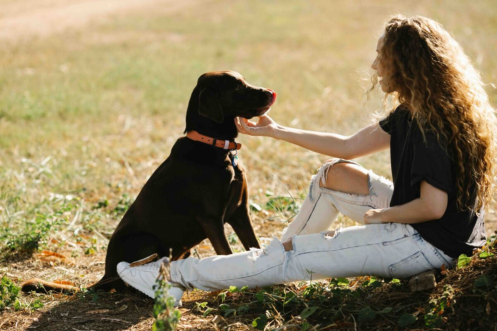
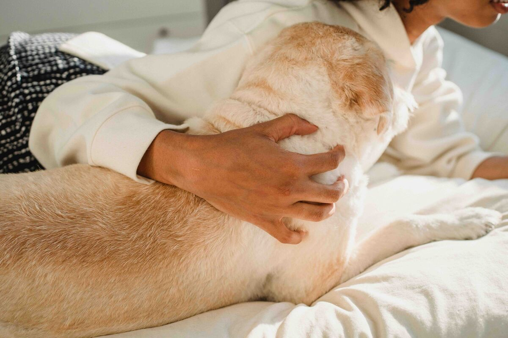

You know the look. Someone walks into the room and catches you mid-sentence — not asking him to sit, not calling his name, but actually talking to him. About your day. About the thing that happened this morning that you're still carrying. About how he seems a little off and you just needed to know he was okay.
They give you that look. The oh, you're one of those look. And for a second, you hear yourself through their eyes. The one-sided conversation. The careful tone you use. The full sentences directed at a creature who can't answer back in words. And you feel, briefly, embarrassed.
Here's what I want to say to that version of you — sitting there editing yourself in real time, apologising for something that needs no apology: you are not doing this because you are confused about what a dog is. You are doing it because something in you genuinely needs to express itself. And that need — that pull toward connection, even with a creature who can't answer back in words — is one of the most revealing things about who you are.
And science, finally, agrees.

There is nothing confused or irrational about a person who can't stop themselves from reaching out to something they love.
There's a Name for What You're Doing
Psychologists call it anthropomorphism — the tendency to attribute human qualities, emotions, and inner experiences to non-human beings. You've been doing it every time you said he looks sad today, or narrated what you imagined your dog was thinking, or lowered your voice to something soft and gentle when you could see he was unsettled.
For a long time, that word carried a diagnosis. Psychology treated anthropomorphism as a cognitive error — the failure to maintain a clear, rational boundary between the human and the non-human. A kind of magical thinking. Something to outgrow. The implication was always that the people doing it were projecting, confused, too attached.
But the newest research tells a completely different story. In 2007, behavioral scientist Nicholas Epley and his colleagues at the University of Chicago published a landmark paper — "On Seeing Human: A Three-Factor Theory of Anthropomorphism" — that reframed the entire conversation. And what they found has been quietly confirmed in brain imaging studies ever since.
When people strongly anthropomorphize animals, the brain regions that activate are the ones associated with theory of mind — the medial prefrontal cortex and the temporoparietal junction. These are the exact same regions you use when you're trying to understand what another person is thinking or feeling. When you imagine your dog's inner world, you're not making a mistake. You're running the same machinery you use to understand other humans.
You're not doing this because you're confused about what a dog is. You're doing it because you are deeply wired for connection — and that wiring is one of the most valuable things about you.
What the Research Actually Says About You
The people who talk to their dogs. Who narrate their dog's inner thoughts. Who say you okay, baby? when the dog seems withdrawn and something inside them needs to ask. These people score significantly higher on specific psychological traits. Traits that, if you listed them without context, most people would actively want.
Theory of mind
Theory of mind is the ability to understand that other beings have beliefs, desires, and perspectives of their own — ones that are different from yours. It's the cognitive move at the heart of empathy, of good relationships, of nearly every skill we'd call emotional intelligence. Children develop it around age four. Adults with a highly developed theory of mind are better listeners, better partners, better at reading what's unsaid in a room.
When you give your dog a voice — when you look at him and say oh, you didn't like that, did you? — you are exercising theory of mind. You are imagining an interior life that isn't yours. You are modeling a perspective, practicing the cognitive move of inhabiting another being's experience. That's not naïve. That's sophisticated.
Empathy
Multiple studies have found that people who anthropomorphize pets score measurably higher on empathy scales. This makes intuitive sense when you understand what empathy actually requires: the imagination of an interior world you don't inhabit. It requires you to believe that other beings have inner experiences worth noticing — and then to respond to what you notice. That is exactly what you're doing when you check on your dog's mood, when you adjust your behavior to his, when you notice the subtle shift in his energy before anyone else does.
Emotional attunement
People who talk to their dogs tend to be highly attuned to them. They notice when the dog seems off. They track shifts in mood and behavior — the slightly flatter tail, the longer pause at the water bowl, the way he pressed a little closer than usual this morning. They respond to what is actually happening, rather than projecting or dismissing.
This is the same capacity that makes someone a good partner. A good friend. A good parent. The ability to notice what is real in another being — not what you assumed would be there — and to meet that reality with care.
Social intelligence
Social intelligence encompasses everything involved in navigating relationships with nuance: reading nonverbal cues, understanding unstated needs, adjusting how you communicate based on who you're with and what they seem to need. People who are in the habit of imagining other minds — which is exactly what anthropomorphism involves — tend to be more socially attuned. They're practicing perspective-taking all the time. Their social intelligence isn't accidental. It's exercised.
A genuine, active need for connection
Epley's research also identified something that is often misread. He found that the motivation to anthropomorphize is partly driven by what he calls sociality motivation — the genuine human need for meaningful connection. The assumption is often that people who talk to their dogs are compensating for a lack of human relationships. The data shows the opposite. The people who anthropomorphize most readily are the ones for whom connection itself is a deep and active value — one they're looking for and creating wherever they can.
Your Dog Is Actually Listening
Here's the part that shifts something. Your dog is not a passive recipient of these conversations. Research from the Family Dog Project in Hungary found that dogs process human speech in a left-hemisphere-dominant way — the same lateralization pattern found in humans. They process words in the left hemisphere of their brain and emotional tone in the right, then combine both to arrive at a response.
Which means dogs do something genuinely remarkable: they can tell the difference between a praise word said in a flat voice and the same word said with warmth. Their reward centers only activate when the content and the tone match — when the good word is said in a way that sounds like it means it. They're not just hearing your sounds. They're processing the combination of what you're saying and how you feel when you say it.
When you talk to your dog, something actually communicative is happening — even if the vocabulary doesn't translate. He hears the gentleness. He reads the rhythm. He feels the quality of your attention. And he responds to all of it in real time, in the particular way that only a being who has spent thousands of years learning to understand humans can.

The conversations are one-sided. The connection is entirely real.
The People Who Laugh at You
Let's say it plainly. The people who find it strange — who roll their eyes, who feel a little sorry for you in the moment they catch you mid-conversation — are not unkind. They're just differently oriented. There is nothing in the research to suggest that maintaining a clear boundary between humans and animals is a marker of superior intelligence or emotional health.
There is, however, research suggesting that the people who can't readily imagine an inner life in animals — who find anthropomorphism genuinely foreign rather than natural — may be less engaged with the imaginative and perspective-taking processes that it exercises. Not worse people. Not less intelligent. Just people who are less practiced at a particular kind of cognitive and emotional generosity.
The thing they called a quirk is actually a trait. A good one. An active one. One that shows up, reliably, in the people who are best at understanding other humans — not just other dogs.
Caring for your dog well — their health, their nutrition, their checkups — is itself a form of attunement. It's you noticing, and then doing something about what you noticed. That impulse and the impulse to talk to him are the same impulse. They come from the same place.
For anyone who has ever felt embarrassed about this
The next time someone catches you mid-conversation with your dog, you don't need to apologise for it. You can simply know what they don't — that the thing they're looking at isn't confusion or sentimentality. It's a deeply developed capacity for empathy and perspective-taking, expressing itself in one of the most honest and unguarded ways available to you. You're not imagining things. You're imagining for another being. And that, quietly, is one of the most important things a person can do.